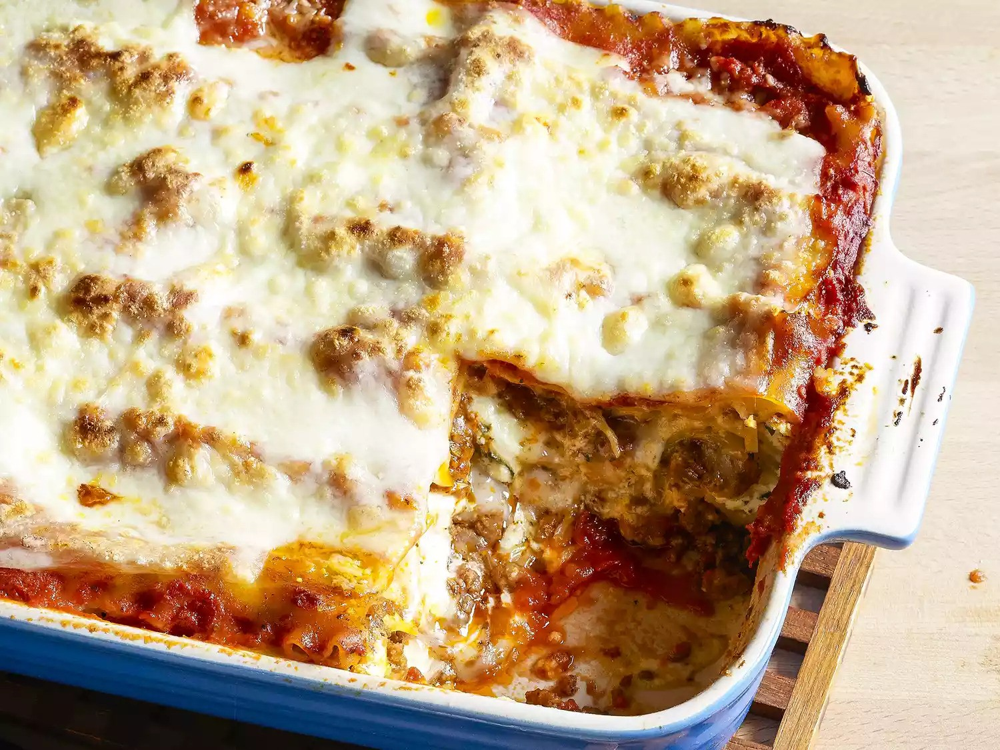

Home
Lasagna Recipe

Description
Lasagna is a classic Italian baked pasta dish made with layers of flat lasagna noodles, rich tomato sauce, seasoned ground meat (often beef or sausage), and a creamy mixture of cheeses such as ricotta, mozzarella, and Parmesan. These layers are stacked and baked until bubbly and golden. Variations may include vegetables, béchamel sauce, or different cheeses. Known for its hearty, comforting flavor, lasagna is a popular dish worldwide, especially for family meals and special occasions.
Ingredients
- Meat
- Onion and Garlic
- Tomato products
- Sugar
- Spices and seasonings
- Lasagna noodles
- Cheese
- Egg
Steps
- Prep the Ingredients: Gather lasagna noodles, ground beef (or sausage), onion, garlic, tomato sauce, crushed tomatoes, ricotta cheese, mozzarella, Parmesan, eggs, and seasonings (like basil, oregano, salt, and pepper).
- Cook the Noodles: Boil lasagna noodles according to package instructions until al dente. Drain and set aside. (Skip if using no-boil noodles.)
- Make the Meat Sauce: In a large skillet, cook ground beef and chopped onion over medium heat until browned. Add garlic, tomato sauce, crushed tomatoes, and seasonings. Simmer for 20–30 minutes.
- Prepare the Cheese Mixture: In a bowl, mix ricotta cheese, beaten egg, half of the Parmesan, and some chopped parsley or basil.
- Preheat the Oven: Set oven to 375°F (190°C).
- Assemble the Lasagna: In a baking dish, spread a thin layer of meat sauce on the bottom. Add a layer of noodles, then spread a layer of cheese mixture, sprinkle mozzarella, and top with meat sauce. Repeat layers 2 to 3 times, ending with sauce and a generous layer of mozzarella and Parmesan.
- Bake: Cover with foil and bake for 25 minutes. Remove foil and bake 10–15 more minutes until bubbly and golden.
- Rest and Serve: Let lasagna cool for 10–15 minutes before slicing. This helps it hold its shape.
Enjoy your delicious homemade lasagna!